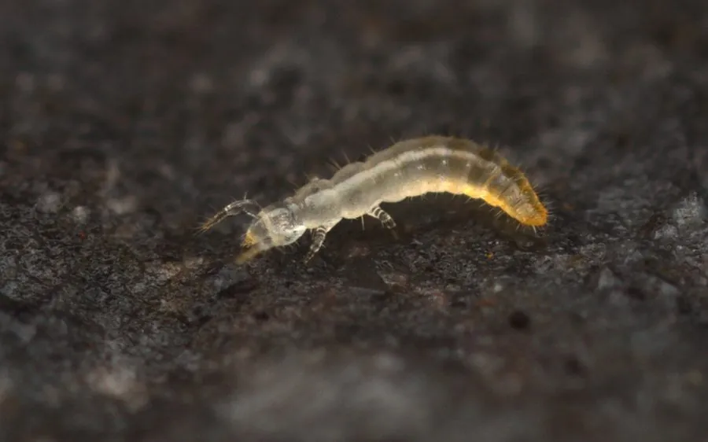

昆虫 · 动物界
原尾虫 Acerentomon microrhinus

体长仅一毫米、无眼无翅的土壤微型节肢动物，生活在湿润落叶层中，是研究昆虫起源的重要类群。
- 分类
- 门节肢动物门纲原尾纲目原尾目科蚖科属蚖属
- 栖息环境
- 湿润森林的腐叶层、土壤孔隙与苔藓下层
- 地理分布
- 世界各湿润林区，中国南方常绿阔叶林种类丰富
- 保护级别
- 无专门保护级别；依赖原始土壤环境，对扰动敏感
物种志
原尾虫的体长仅零点五至二毫米，体细长，白色至淡黄色，没有眼睛也没有翅膀，触角退化。前足发达并高高举在头前，代替触角探路，这种姿态十分独特。腹部由十二节组成，末端有短小的尾须，体表覆盖细密的刻点。它靠体表的微小呼吸孔进行气体交换，对湿度要求极高，一旦干燥就会迅速失水。
原尾虫分布于世界各地湿润的森林土壤中，中国南方的常绿阔叶林落叶层里种类丰富。它生活在腐叶层和土壤孔隙中，取食真菌菌丝和腐殖质，行动缓慢，遇到干燥便钻向更深土层。由于身体结构原始，原尾虫被认为是研究昆虫起源与演化的关键类群，中国学者在分类研究上贡献良多。它对土壤湿度和结构极为敏感，森林砍伐与土壤板结会迅速导致其消失，是土壤健康的指示生物。
形态与习性
- 体长仅零点五至二毫米，白色至淡黄
- 眼与翅均无，触角退化
- 前足高举头前代替触角探路
- 腹部十二节，末端有短小尾须
- 食性取食真菌菌丝与腐殖质
- 指示意义对土壤湿度与结构极敏感
趣味知识
- 它没有眼睛也没有触角，却把一对前足举在头前当雷达用。
- 原尾虫的化石记录极少，研究它有助于弄清昆虫从哪里来。
- 挖开一片没被翻动过的湿腐叶，才可能见到它的身影。